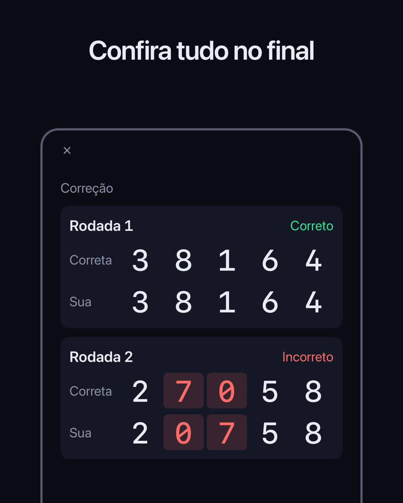
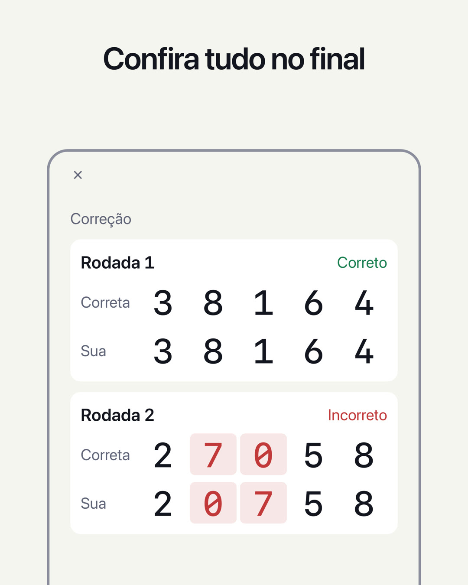

TESTE DE MEMÓRIA NUMÉRICA / DIGIT SPAN
Quantos dígitos você consegue memorizar?
Os dígitos aparecem um de cada vez. Quando eles somem, você os digita na ordem em que apareceram. Escolha um nível e responda 5 rodadas. O nível mais alto em que você acerta as 5 mostra quantos dígitos você consegue memorizar — sua extensão de dígitos (digit span). Um teste simples de memória de curto prazo.
Em breve (para iPhone, uso gratuito)

Como funciona
- Veja os dígitosEles aparecem um de cada vez (0,7 segundo cada, por padrão).
- Digite-os na ordemNo modo Inversa, digite começando pelo último dígito que apareceu.
- Confira as 5 rodadasCinco rodadas com o mesmo número de dígitos. A cada rodada, você só fica sabendo se acertou ou errou; no final, vê todas as respostas juntas. O nível mais alto em que você acerta as 5 é a sua extensão de dígitos.
Guia completo e perguntas frequentes →
Recursos
- Dois testes, Direta e Inversa, cada um com seu próprio recorde pessoal. No modo Inversa, você reorganiza os dígitos de cabeça, então ele também usa a memória de trabalho
- Confira as 5 rodadas na tela Resultado: sua resposta ao lado da correta, com os dígitos errados destacados
- Acompanhe seu recorde pessoal de cada dia na tela Histórico
- Altere o nível (2 a 12 dígitos) e por quanto tempo cada dígito é exibido (0,05 a 2,0 segundos)
- Escolha como os dígitos são apresentados: Tela, Voz ou Ambos. Com Voz, o teste passa a ser só de ouvir
- Escolha o tema (Sistema, Claro ou Escuro) e a cor (Violeta, Azul, Laranja ou Rosa)
- Todos os dígitos são monoespaçados, em uma tela limpa, como a de um instrumento de medição
- Os registros ficam só no seu aparelho. Sem login
Costuma-se dizer que a referência para um adulto médio é de 7±2 dígitos na ordem direta (Miller, 1956). Como este app só conta um nível quando você acerta as 5 rodadas, a pontuação é diferente da dos testes convencionais. O app serve para você verificar quantos dígitos consegue memorizar; ele não é um diagnóstico médico nem tem a finalidade de melhorar a memória.
App irmão
Sobre os anúncios
Os anúncios aparecem na parte de baixo das telas Início, Resultado e Histórico. Um anúncio em tela cheia aparece quando você começa um teste (Iniciar teste, na tela Início, ou De novo, na tela Resultado; uma vez sim, outra não). Nenhum anúncio é exibido enquanto você vê os dígitos, digita sua resposta ou vê se acertou.
Nenhum anúncio é exibido enquanto você tiver uma assinatura Premium (mensal, com renovação automática; o preço é mostrado no app e na App Store). A assinatura é renovada automaticamente, a menos que você a cancele pelo menos 24 horas antes do fim do período atual. Consulte os Termos de Uso para ver as condições e como cancelar. Todos os recursos de teste e de histórico funcionam sem assinatura.